This vignette gives a practical end-to-end workflow for the
scalingPlantArchitecture package:
The examples are intentionally lightweight so they run quickly during checks.
p <- new_spa_params(
max_order = 9,
path_fraction = 0.68,
seed = 42,
length_decay = 0.78,
radius_decay = 0.79,
branch_prob = 0.98
)
p## $max_order
## [1] 9
##
## $branch_prob
## [1] 0.98
##
## $length_decay
## [1] 0.78
##
## $radius_decay
## [1] 0.79
##
## $path_fraction
## [1] 0.68
##
## $asymmetry_strength
## [1] 0.7
##
## $asym_alpha
## [1] 2
##
## $asym_beta
## [1] 2
##
## $base_length
## [1] 1
##
## $base_radius
## [1] 0.1
##
## $branch_angle
## [1] 34
##
## $branch_angle_sd
## [1] 9
##
## $main_angle_sd
## [1] 4
##
## $seed
## [1] 42
##
## attr(,"class")
## [1] "spa_params"The JavaScript simulator in js-tree-simulator/index.html
is the browser-facing version of the same model family. The examples
below mirror the settings I use most often in the browser and show the
package-side outputs that match those diagnostics.
This is the closest package-side analogue to the simulator’s WBE reference button.
p_wbe <- new_spa_params(
max_order = 9,
path_fraction = 0.50,
asymmetry_strength = 0.00,
length_decay = 0.794,
radius_decay = 0.707,
branch_prob = 1.00,
seed = 42
)
tr_wbe <- simulate_branching_tree(p_wbe)
plot_tree_teaching_dashboard(
tr_wbe,
preset = "publication",
bins = 20,
endpoint = "tips"
)## `geom_smooth()` using formula = 'y ~ x'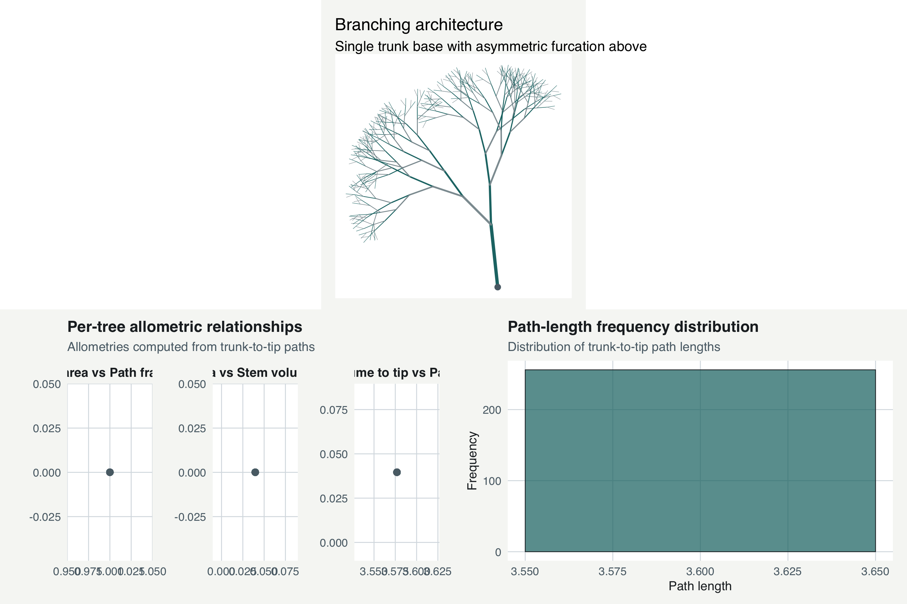
This example uses a stronger main-path bias and asymmetry so the resulting tree departs from the symmetric WBE baseline.
p_asym <- new_spa_params(
max_order = 9,
path_fraction = 0.68,
asymmetry_strength = 0.65,
length_decay = 0.78,
radius_decay = 0.79,
branch_prob = 0.98,
seed = 42
)
tr_asym <- simulate_branching_tree(p_asym)
plot_tree_teaching_dashboard(
tr_asym,
preset = "publication",
bins = 20,
endpoint = "tips"
)## `geom_smooth()` using formula = 'y ~ x'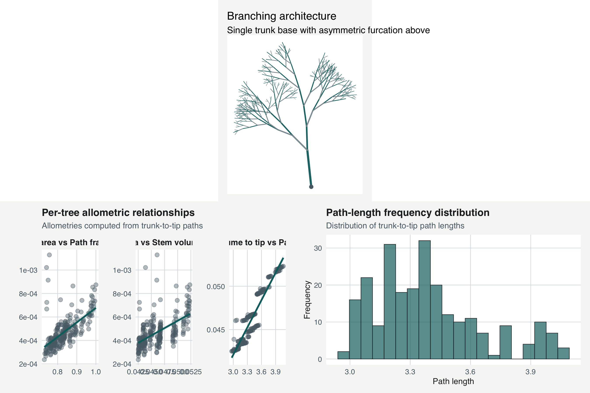
The browser app now supports very broad size ranges, including
min tips = 1, max tips = 1000, and
size classes = 10. The package reproduces the diagnostic
idea by sweeping path fractions and inspecting how the fitted slopes
change with scale.
sim_example <- analyze_ensemble(
path_fraction_values = c(0.29, 0.51, 0.68, 1.00),
n_rep = 12,
base_params = p_asym
)
plot_pathfraction_scaling(
sim_example$metrics,
preset = "publication",
show_ci = TRUE
)## `geom_smooth()` using formula = 'y ~ x'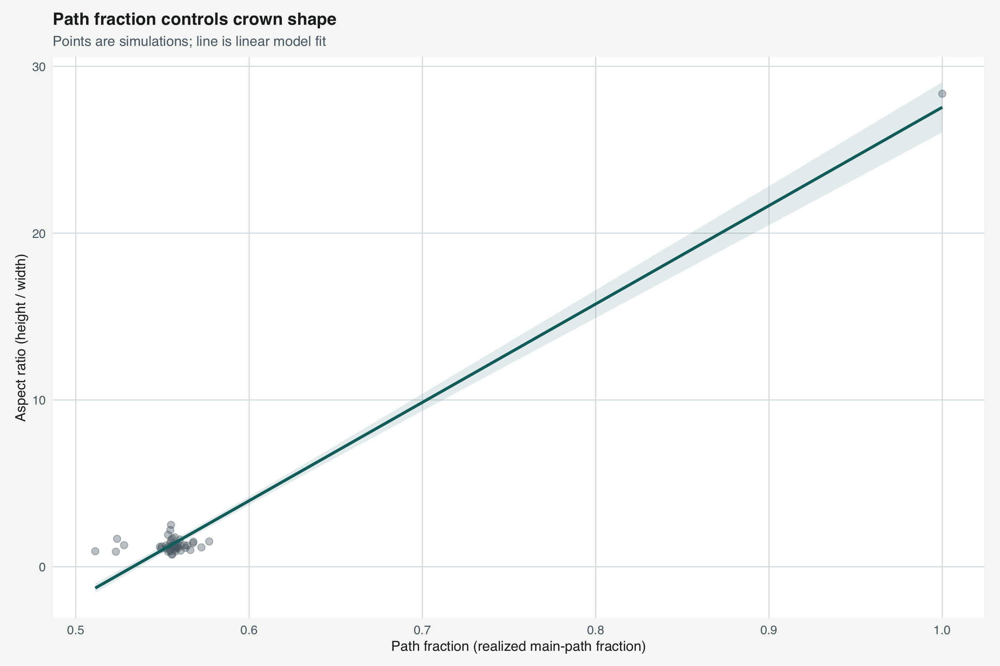
plot_smith_tree_panel(
c(0.29, 0.51, 0.68, 1.00),
base_params = p_asym,
preset = "publication",
show_order_tone = TRUE,
highlight_main_path = TRUE
)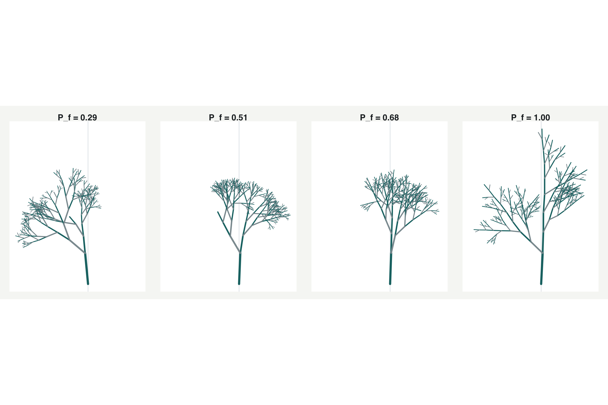
plot_tree_allometries(tr_asym, preset = "publication")## `geom_smooth()` using formula = 'y ~ x'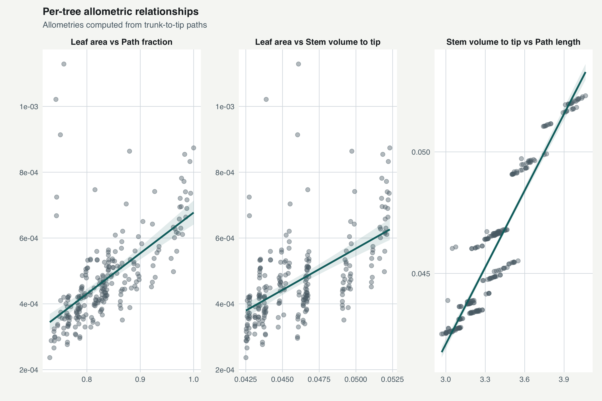
tr <- simulate_branching_tree(p)
plot_tree(
tr,
preset = "publication",
highlight_main_path = TRUE,
title = "Simulated asymmetric branching architecture",
subtitle = "Branch width is scaled by conduit-radius proxy"
)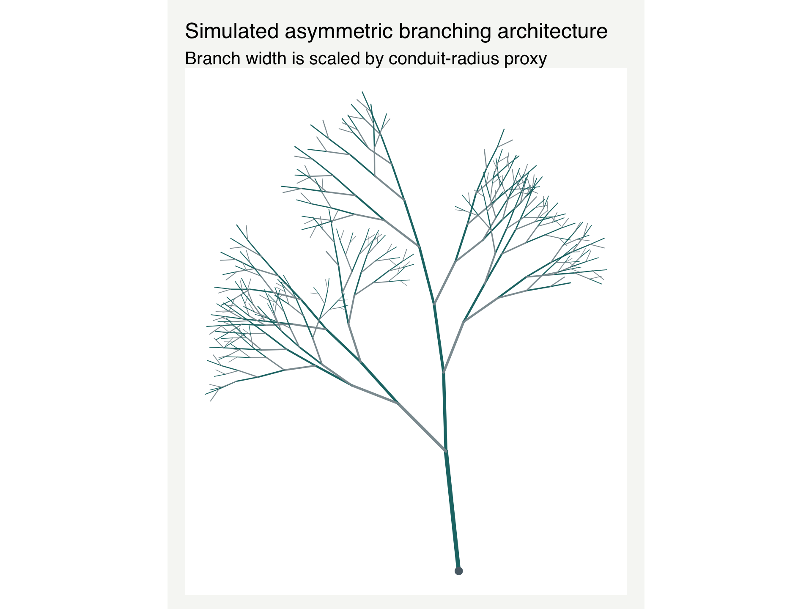
plot_smith_tree_panel(
c(0.29, 0.51, 0.68, 1.00),
base_params = p,
preset = "publication",
show_order_tone = TRUE,
highlight_main_path = FALSE
)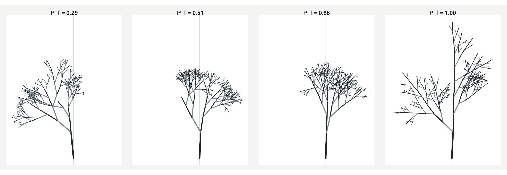
m <- compute_scaling_metrics(tr)
m## # A tibble: 1 × 13
## path_fraction_target path_fraction_realized path_fraction_realized_main
## <dbl> <dbl> <dbl>
## 1 0.68 0.556 0.556
## # ℹ 10 more variables: path_fraction_realized_length <dbl>,
## # mean_path_length <dbl>, mean_path_stem_volume <dbl>, n_tips <int>,
## # M_proxy <dbl>, K_proxy <dbl>, B_proxy <dbl>, height <dbl>, width <dbl>,
## # aspect_ratio <dbl>p_fast <- new_spa_params(max_order = 7, path_fraction = 0.68, seed = 42)
ens <- analyze_ensemble(path_fraction_values = c(0.29, 0.51, 0.68, 1.00), n_rep = 8, base_params = p_fast)
plot_pathfraction_scaling(ens$metrics, preset = "publication", show_ci = TRUE)## `geom_smooth()` using formula = 'y ~ x'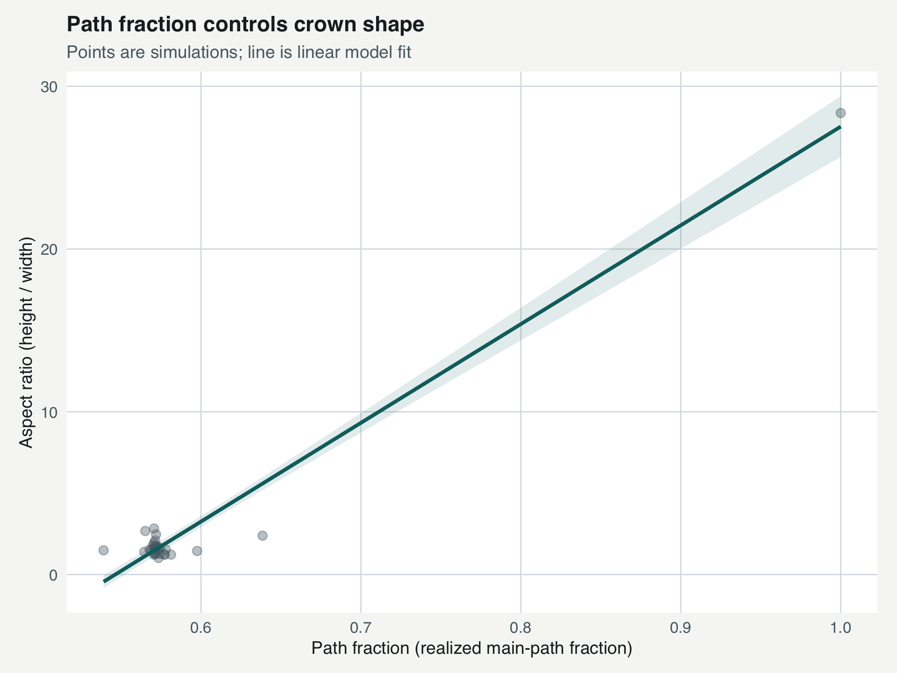
ens$fits## $path_fraction_to_aspect
## # A tibble: 1 × 5
## term estimate std_error conf_low conf_high
## <chr> <dbl> <dbl> <dbl> <dbl>
## 1 log_slope 4.97 0.459 4.04 5.91
##
## $mass_to_conductance
## # A tibble: 1 × 5
## term estimate std_error conf_low conf_high
## <chr> <dbl> <dbl> <dbl> <dbl>
## 1 log_slope -0.652 0.0772 -0.810 -0.494exp_out <- run_scaling_experiment(
path_fraction_values = c(0.29, 0.51, 0.68, 1.00),
n_rep = 8,
base_params = p_fast
)
exp_out$summary## # A tibble: 4 × 5
## path_fraction_target mean_path_fraction mean_aspect_ratio mean_mass_proxy
## <dbl> <dbl> <dbl> <dbl>
## 1 0.29 0.623 4.74 0.0825
## 2 0.51 0.575 1.50 0.0899
## 3 0.68 0.580 1.57 0.0855
## 4 1 0.570 2.09 0.100
## # ℹ 1 more variable: mean_conductance_proxy <dbl>head(exp_out$analytical_baseline$table)## # A tibble: 6 × 3
## order M_proxy K_proxy
## <int> <dbl> <dbl>
## 1 1 0.0314 0.0002
## 2 2 0.0596 0.000140
## 3 3 0.0850 0.000128
## 4 4 0.108 0.000127
## 5 5 0.128 0.000132
## 6 6 0.147 0.000140plot_tree_allometries(tr, preset = "publication", show_ci = TRUE)## `geom_smooth()` using formula = 'y ~ x'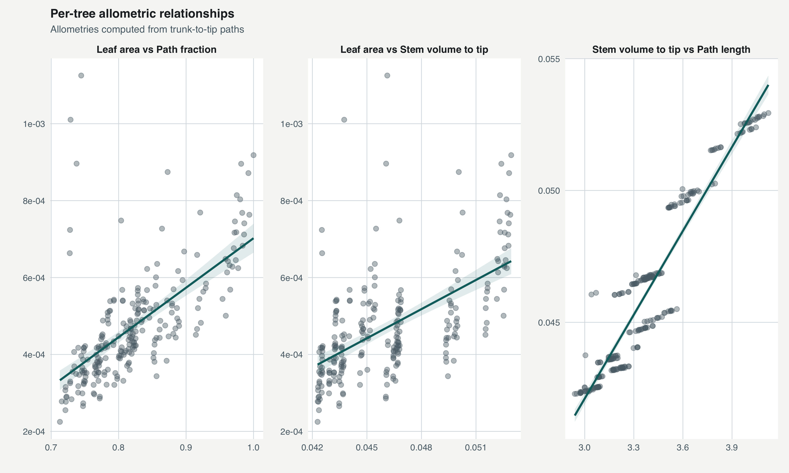
allom <- compute_tree_allometries(tr)
allom$summary## # A tibble: 1 × 5
## stem_volume_total leaf_area_total mean_path_length mean_path_fraction n_tips
## <dbl> <dbl> <dbl> <dbl> <int>
## 1 0.143 0.115 3.39 0.822 243plot_path_length_distribution(tr, endpoint = "tips", bins = 20, preset = "publication")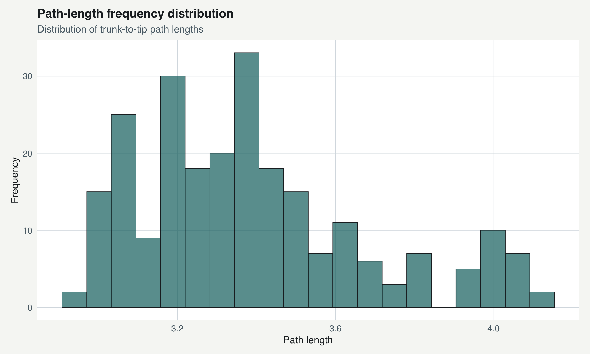
plot_path_length_distribution(tr, endpoint = "all_nodes", bins = 20, preset = "publication")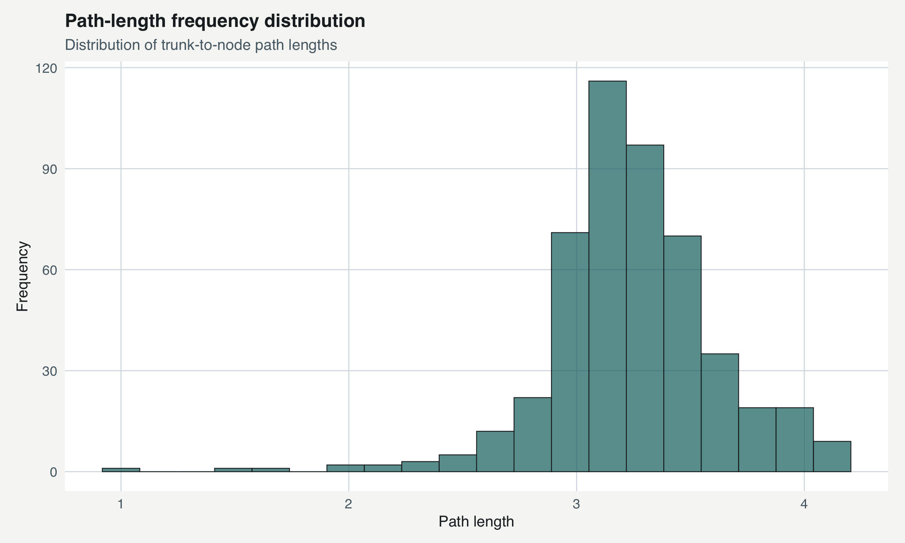
ana <- analytic_symmetric_wbe(max_order = 12)
head(ana$table)## # A tibble: 6 × 3
## order M_proxy K_proxy
## <int> <dbl> <dbl>
## 1 1 0.0314 0.0002
## 2 2 0.0596 0.000140
## 3 3 0.0850 0.000128
## 4 4 0.108 0.000127
## 5 5 0.128 0.000132
## 6 6 0.147 0.000140ana$exponent## # A tibble: 1 × 5
## term estimate std_error conf_low conf_high
## <chr> <dbl> <dbl> <dbl> <dbl>
## 1 log_slope 0.0723 0.100 -0.151 0.296analyze_ensemble) for stable
comparisons.